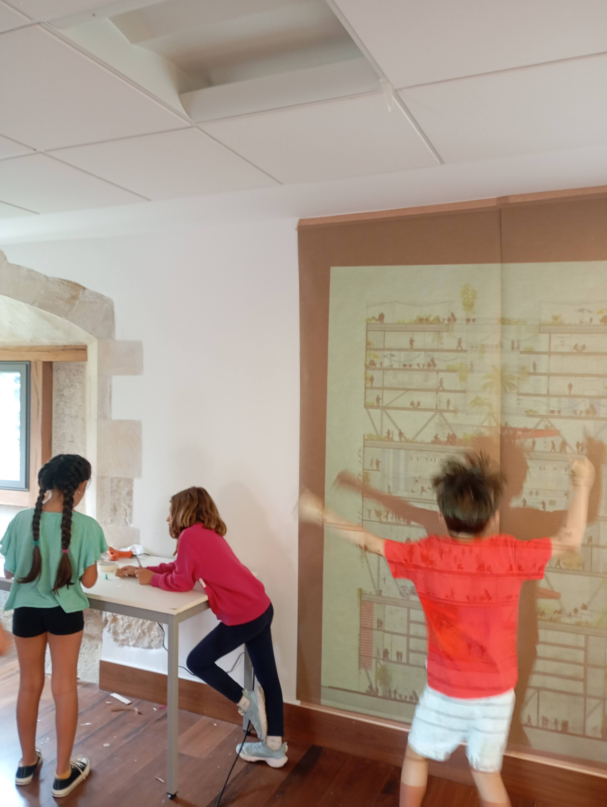
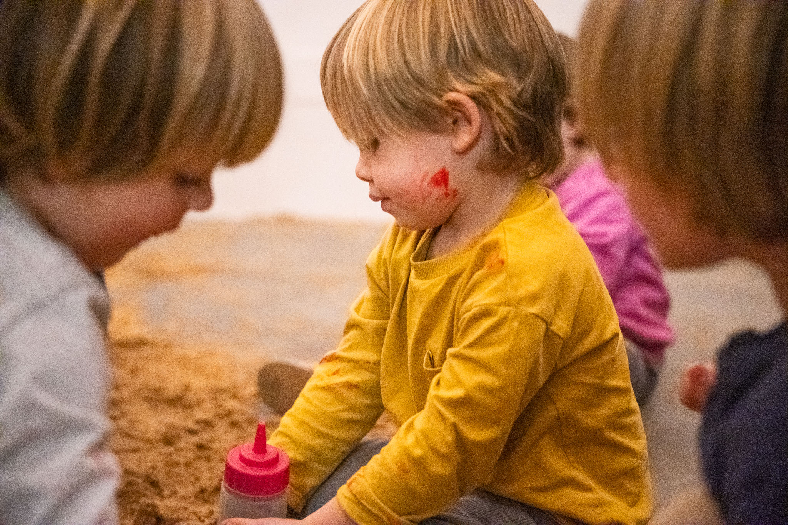
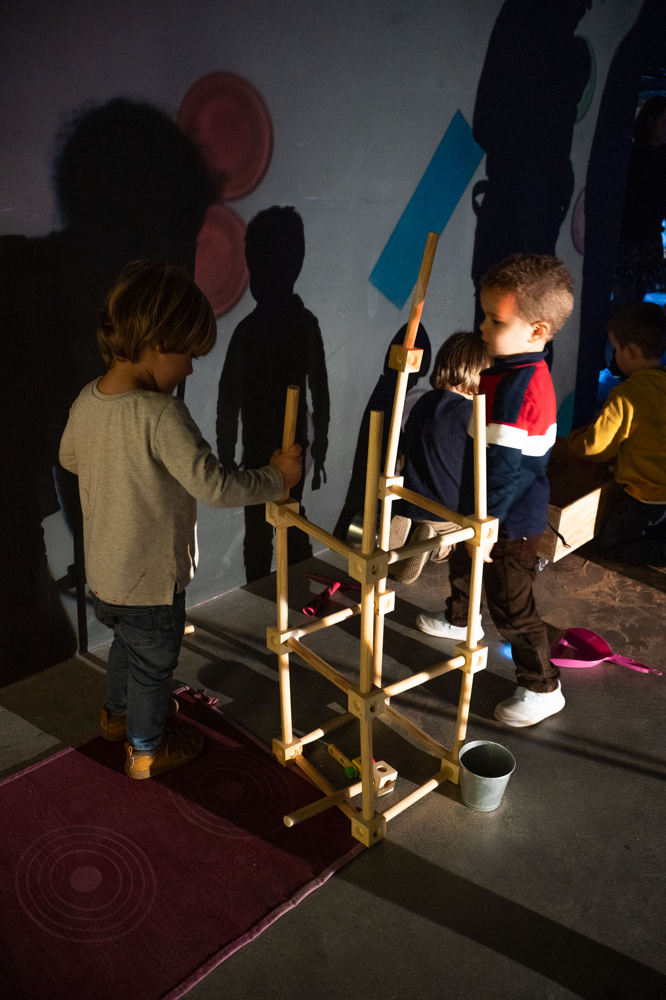
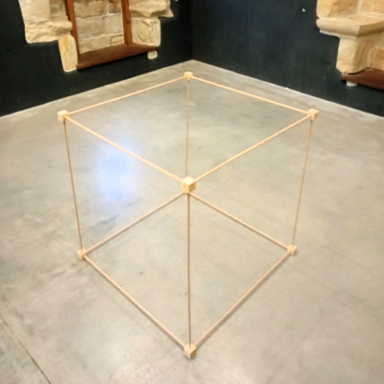
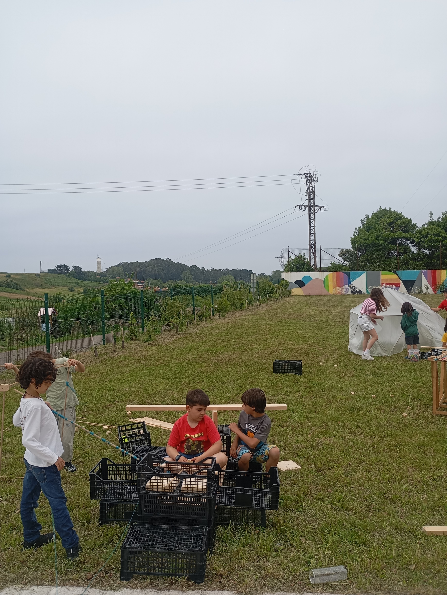

Elementos lineales (listones de madera, tubos PVC o bambú) y conectores para generar estructuras ligeras, autoportantes y con distintas escalas de complejidad. Los mismos materiales de los talleres, fabricados en Coloniales.
Kit educativo · 6-16 años · Celda 01
Lógica Recíproca
Estructuras autoportantes donde cada pieza depende de las demás. No hay instrucciones cerradas: hay una pregunta poderosa que cada niño o niña resuelve de manera diferente con los mismos materiales.
3Entornos de uso
6-16Años
∞Soluciones posibles



Arquitectura/
Equilibrio/
Tensegridad/
Domos geodésicos/
Geometría espacial/
Palos de Leonardo/
Construcción libre/
Arquitectura/
Equilibrio/
Tensegridad/
Domos geodésicos/
Geometría espacial
01 /
Qué Es
Construcción que piensa en conjunto
Lógica Recíproca convierte una idea arquitectónica compleja —la estructura recíproca, donde cada elemento apoya al siguiente en un círculo cerrado— en una experiencia física, comprensible y muy atractiva.
Aquí no se trata de apilar piezas sin más. Se trata de descubrir cómo aparecen la estabilidad, la tensión y la forma cuando las partes se necesitan entre sí. Eso es lo que activa: la pregunta de cómo algo se sostiene.
Lo que lo hace distinto
- Sin pantalla — manos, cuerpo, prueba, caída y reconstrucción.
- Escalable — funciona desde primeros tanteos de 6 años hasta retos técnicos en secundaria.
- Transversal — arquitectura, ciencia, geometría, arte y trabajo cooperativo al mismo tiempo.
- Muy visual — genera estructuras llamativas que invitan a parar, mirar y seguir probando.
- Sin caducidad — no se acaba. Cada vez que lo sacas aparecen soluciones nuevas.
02 /
Los 4 Kits
Kit 01

Consultar
Hexa
Un cubo modular de 1 m³ en madera natural para construir, cubrir y habitar.
Saber más →
Kit 02

Consultar
Domiko
Un icosaedro de 2,20 m de diámetro para comprender equilibrio y forma con las manos.
Saber más →
Kit 03

Consultar
Duomo
Un domo geodésico 2V de palos y conectores donde cabe un mundo de posibilidades.
Saber más →
Kit 04

Consultar
Leopalos
Cúpulas autoportantes, puentes y estructuras recíprocas inspiradas en Leonardo da Vinci.
Saber más →03 /
Qué Incluye La Experiencia
Más que una caja de piezas, es un sistema de construcción abierto con tres capas de uso.
Tarjetas de provocación que proponen desafíos concretos: levantar un domo, crear una cúpula habitable, construir el puente más largo o la torre más alta sin clavos ni pegamento.
Documentación para que familias, docentes o mediadores puedan sacarle todo el recorrido posible, desde la exploración libre hasta propuestas STEAM y arquitectura efímera.
De la pieza al espacio
Lo mejor es que no se agota rápido. Empieza siendo un juego de construcción ampliado y puede acabar convirtiéndose en un laboratorio de arquitectura, una instalación efímera o una dinámica de grupo intergeneracional.
MaterialesPalos, cuerdas, Strawbees, Bridas, Tubos PVC
EntornoCasa, aula, campus o evento
Celda01 · Lógica Recíproca
Duración2-4 horas por sesión
04 /
Qué Activa En Quien Lo Usa
Ver la estructura antes de acabarla
Ayuda a imaginar apoyos, vacíos, tensiones y forma. Es una puerta muy buena a la arquitectura sin tecnicismos pesados.
Caerse también enseña
Las pruebas fallidas forman parte del aprendizaje. Cada colapso explica algo sobre peso, orden, secuencia y equilibrio.
Nadie sostiene solo
El propio sistema obliga a coordinarse, esperar, ajustar y mirar lo que hace el otro. La lógica recíproca también es social.


05 /
Cómo Se Puede Usar
Explorar
Tocar las piezas, probar apoyos, montar pequeñas células y descubrir cuándo una estructura empieza a sostenerse por sí sola.
Retar
Plantear objetivos concretos: levantar un domo, crear un refugio, resolver una unión difícil o construir una forma determinada.
Habitar
Llevar la construcción hacia el cuerpo, el espacio y el grupo. Pasar del objeto a la experiencia es donde esta celda brilla de verdad.
En casa
Material de juego abierto para niñas y niños que disfrutan construyendo, imaginando formas o repitiendo una misma idea hasta dominarla. Sin pilas, sin pantalla, sin límite de tiempo.
En aula o taller
Ideal para propuestas de arquitectura, STEAM, geometría, instalación artística, trabajo cooperativo o diseño efímero. Ha funcionado muy bien en campus de verano, extraescolares y talleres en centros educativos.
06 /
¿Con qué kit empiezo?
¿Para qué edades está pensado?
Desde unos 6 años con acompañamiento ligero. En primaria y secundaria gana mucho recorrido técnico. Funciona igualmente bien en talleres intergeneracionales donde adultos y niños construyen juntos.
¿Es un juguete cerrado o un material abierto?
Material abierto. Puede venir acompañado de retos o provocaciones, pero su valor está en que permite múltiples soluciones. No hay una manera correcta de usarlo.
¿Sirve para colegios o solo para familias?
Para ambos. Su potencial crece mucho en entornos grupales: talleres de arquitectura, experiencias STEAM, campamentos, campus de verano o dinámicas cooperativas en centros educativos.
¿Cómo lo compro o encargo?
Los kits se producen de forma artesanal en el taller de Coloniales. Escríbenos por WhatsApp o rellena el formulario para informarte de disponibilidad y precios según el formato que necesites.
¿Cómo conecta con el resto de Coloniales?
Es la versión tangible y portable de la Celda 01. Si quieres explorar más celdas, apuntarte a la extraescolar o traer un taller a tu centro, podemos combinar el kit con una propuesta completa.
¿Quieres Activar Lógica Recíproca?
Como kit para casa, como taller en un centro educativo o como propuesta para un campus. Esta página puede ser también la puerta de entrada a todo el universo Coloniales.